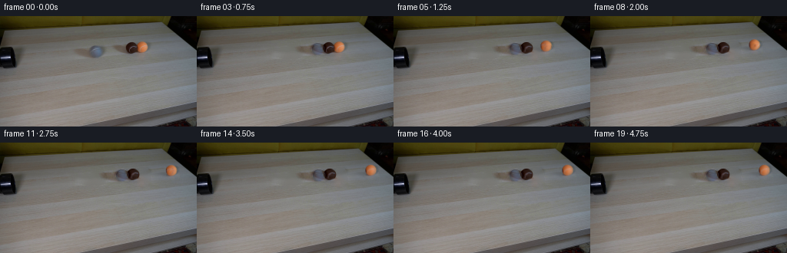
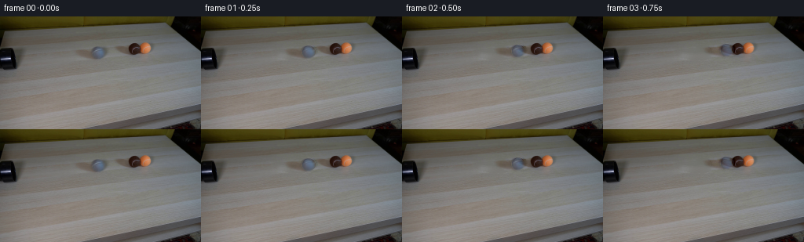

CODING AGENTS AS PIXEL WORLD MODELS
traex/GPT-6.1-Sol · 0028
点击播放 · 原生 RGB 像素
逐轮保存的候选
回放视频、检查图与代码变化。
每份候选均可单独播放。实际图片检查记录在下方工具轨迹中。
候选 01播放与检查图
点击播放 · 原生 RGB 像素

展开代码变化
--- 上一保存版本
+++ 本次保存版本
@@ -0,0 +1,222 @@
+from pathlib import Path
+import numpy as np
+import cv2
+from PIL import Image
+from scipy.ndimage import map_coordinates, gaussian_filter
+from artifact_io import save
+
+ROOT = Path(__file__).resolve().parent
+W, H = 256, 144
+SS = 4
+Y, X = np.mgrid[:H, :W].astype(np.float64)
+YS, XS = np.mgrid[:H*SS, :W*SS].astype(np.float64)
+XS = (XS + .5)/SS - .5
+YS = (YS + .5)/SS - .5
+SOURCE = np.array(Image.open(ROOT/'first_frame.png').convert('RGB'), dtype=np.uint8)
+F = SOURCE.astype(np.float64)
+
+# Measured locations and outlines. The optical axis and illumination stay fixed.
+BALLS = [
+ dict(name='grey', x=125.45, y=46.20, rx=8.35, ry=8.10),
+ dict(name='brown', x=171.30, y=41.30, rx=8.00, ry=7.55),
+ dict(name='orange', x=185.00, y=40.05, rx=7.70, ry=7.35),
+]
+
+def circle_mask(cx,cy,rx,ry):
+ return ((X-cx)/rx)**2+((Y-cy)/ry)**2 < 1
+
+def clean_plate():
+ # Only the portions of the table that were occluded need reconstruction.
+ m0 = circle_mask(125.6,46.2,12.1,10.0).astype(np.uint8)
+ cv2.fillPoly(m0,[np.array([[94,42],[113,40],[135,43],[138,53],[117,56],[96,51]],np.int32)],1)
+ m1 = (circle_mask(171.4,41.4,10.2,9.1)|circle_mask(185.2,40.4,10.3,9.3)).astype(np.uint8)
+ cv2.fillPoly(m1,[np.array([[145,37],[167,35],[195,40],[196,51],[165,53],[146,46]],np.int32)],1)
+ mask = (m0|m1)*255
+ bg = cv2.inpaint(SOURCE,mask,3.5,cv2.INPAINT_TELEA).astype(float)
+ # Smooth inpainting diffusion at this low resolution while retaining source grain.
+ blur = gaussian_filter(bg,(.55,.55,0))
+ bg = np.where((mask>0)[...,None], .65*bg+.35*blur, F)
+ return bg,m0.astype(bool),m1.astype(bool)
+
+BG, MG, MC = clean_plate()
+
+
+def features(x,y,z):
+ return np.stack((np.ones_like(x),x,y,z,x*z,y*z,x*y),axis=-1)
+
+
+def bilinear(im,x,y):
+ # Local interpolation is an image operation, not a learned renderer.
+ coords=np.array([y.ravel(),x.ravel()])
+ if im.ndim==2:
+ return map_coordinates(im,coords,order=1,mode='nearest').reshape(x.shape)
+ return np.stack([map_coordinates(im[...,c],coords,order=1,mode='nearest').reshape(x.shape) for c in range(im.shape[-1])],-1)
+
+
+def make_material(ball):
+ nx=(X-ball['x'])/ball['rx']; ny=(Y-ball['y'])/ball['ry']
+ q=nx*nx+ny*ny; nz=np.sqrt(np.maximum(0,1-q))
+ ff=features(nx,ny,nz)
+ ok=q<.85**2
+ if ball['name']=='brown':
+ ok &= F[...,0]<70
+ elif ball['name']=='orange':
+ ok &= F[...,1]/(F[...,0]+1)<.64
+ for _ in range(4):
+ a=np.linalg.lstsq(ff[ok],F[ok],rcond=None)[0]
+ err=np.linalg.norm(ff@a-F,axis=-1)
+ ok &= err<np.quantile(err[ok],.87)
+ # Separate stationary spherical lighting from the felt/seam albedo.
+ pred=ff@a
+ residual=F-pred
+ valid=np.clip((.96-np.sqrt(q))/.12,0,1)
+ if ball['name']=='brown':
+ # The orange ball hides the right edge; infer the shaded felt there.
+ valid*=np.clip((179.0-X)/1.5,0,1)
+ residual*=valid[...,None]
+ ball['coeff']=a
+ ball['residual']=residual
+
+for b in BALLS:
+ make_material(b)
+
+
+def lowres(a):
+ return a.reshape(H,SS,W,SS,*a.shape[2:]).mean(axis=(1,3))
+
+
+def render_ball(ball,cx,cy,scale,angle):
+ rx=ball['rx']*scale; ry=ball['ry']*scale
+ nx=(XS-cx)/rx; ny=(YS-cy)/ry
+ rho=np.sqrt(nx*nx+ny*ny)
+ alpha=np.clip((1.025-rho)*SS*min(rx,ry),0,1)
+ nz=np.sqrt(np.maximum(0,1-nx*nx-ny*ny))
+ shade=features(nx,ny,nz)@ball['coeff']
+ # Roll around the tabletop's transverse axis. Rotating the seam but not the
+ # illumination avoids the 'spinning highlight' of a flat translated cutout.
+ ca=np.cos(angle); sa=np.sin(angle)
+ tx=ca*nx-sa*nz
+ tz=sa*nx+ca*nz
+ # Continue the measured visible felt onto the unseen hemisphere by symmetry.
+ tx=np.where(tz<0,-tx,tx)
+ tex=bilinear(ball['residual'],ball['x']+ball['rx']*tx,ball['y']+ball['ry']*ny)
+ felt_fade=np.clip((1.03-rho)/.10,0,1)
+ col=shade+tex*felt_fade[...,None]
+ # Subpixel edge and the mild lens softness present in the photographed setup.
+ alpha=lowres(alpha)
+ premul=lowres(np.clip(col,0,255)*np.clip((1.025-rho)*SS*min(rx,ry),0,1)[...,None])
+ alpha=gaussian_filter(alpha,.40)
+ premul=gaussian_filter(premul,(.40,.40,0))
+ return premul,alpha
+
+
+def shadow(ball,cx,cy,scale):
+ # Large upper-right source: soft shadows fall leftwards across the table.
+ rx=ball['rx']*scale; ry=ball['ry']*scale
+ gx=cx; gy=cy+ry-.1
+ cast=np.zeros((H,W),float)
+ for offset,sigma_x,sigma_y,strength in [(3.0,6.5,1.55,.07),(8.0,8.5,2.2,.075),(14.0,10.0,2.0,.040)]:
+ q=((X-(gx-offset*scale))/(sigma_x*scale))**2+((Y-(gy-3.0*scale))/(sigma_y*scale))**2
+ cast+=strength*np.exp(-q*.5)
+ contact=.16*np.exp(-.5*(((X-gx)/(rx*.78))**2+((Y-(gy-.1))/(1.20*scale))**2))
+ return cast+contact
+
+
+def raw_scene(state):
+ positions=[]
+ for b,d in zip(BALLS,state):
+ # The horizontal tabletop is foreshortened; uphill travel very gently
+ # decreases the apparent diameter without moving the camera.
+ dx=d*.855
+ dy=d*(-.519)*.18
+ sc=1+.007*dy
+ positions.append((b['x']+dx,b['y']+dy,sc,d/8.08))
+ sh=sum(shadow(b,*p[:3]) for b,p in zip(BALLS,positions))
+ out=BG*(1-np.clip(sh,0,.60)[...,None])
+ # The far orange ball overlaps a small part of the brown sphere at rest.
+ for b,p in zip(BALLS,positions):
+ pm,a=render_ball(b,*p)
+ out=out*(1-a[...,None])+pm
+ return out,positions
+
+
+# A source-matched optical residual retains photographed penumbra, fine tabletop
+# texture and lens-edge structure not captured by the elementary spherical model.
+BASE, _ = raw_scene(np.zeros(3))
+ERR=F-BASE
+# Partition that small calibration residual between the three moving objects.
+# Outside these supports it is a fixed clean-plate correction.
+gray_support=MG.astype(float)
+# Background in the cast-shadow supports has a smoothly weighted ownership.
+orange_share=np.clip((X-175.7)/7.0,0,1)
+# Orange's visible silhouette takes precedence at the original overlap.
+a_orange=render_ball(BALLS[2],185,40.05,1,0)[1]
+orange_share=np.maximum(orange_share,a_orange)
+brown_support=MC*(1-orange_share)
+orange_support=MC*orange_share
+SUPPORT=[gray_support,brown_support,orange_support]
+RESID=[ERR*m[...,None] for m in SUPPORT]
+FIXED=ERR*(1-np.clip(sum(SUPPORT),0,1))[...,None]
+
+
+def physics():
+ # Equal-mass, rolling spheres; 1D impact conserves momentum. Coefficient of
+ # restitution models tennis felt/rubber losses, rolling resistance arrests
+ # each ball gradually. The two target balls are initially almost touching.
+ centers=np.array([0.,(171.3-125.45)/.855,(185-125.45)/.855])
+ radii=np.array([8.16,8.00,7.96])
+ initial=centers.copy()
+ velocity=np.array([55.,0.,0.])
+ dt=1/2400
+ friction=12.
+ restitution=.72
+ result=[np.zeros(3)]
+ impact=[]
+ for step in range(1,19*600+1):
+ # Constant rolling resistance; never reverses a ball at rest.
+ v0=velocity.copy()
+ velocity=np.sign(velocity)*np.maximum(0,np.abs(velocity)-friction*dt)
+ centers+=(v0+velocity)*(.5*dt)
+ for j in [0,1,0]:
+ gap=centers[j+1]-centers[j]-(radii[j]+radii[j+1])
+ if gap<0:
+ centers[j]+=gap/2
+ centers[j+1]-=gap/2
+ rel=velocity[j]-velocity[j+1]
+ if rel>0:
+ impulse=.5*(1+restitution)*rel
+ velocity[j]-=impulse
+ velocity[j+1]+=impulse
+ if rel>1: impact.append((step*dt,j,float(rel)))
+ if step%600==0:
+ result.append(centers-initial)
+ return np.array(result),impact
+
+
+def generate():
+ trajectory,impacts=physics()
+ frames=[SOURCE.copy()]
+ for i in range(1,20):
+ out,pos=raw_scene(trajectory[i])
+ out+=FIXED
+ for resid,b,p in zip(RESID,BALLS,pos):
+ dx=p[0]-b['x']; dy=p[1]-b['y']
+ # Match each residual's translation and weak perspective shrink.
+ sx=b['x']+(X-p[0])/p[2]
+ sy=b['y']+(Y-p[1])/p[2]
+ out+=bilinear(resid,sx,sy)
+ frames.append(np.clip(np.rint(out),0,255).astype(np.uint8))
+ frames=np.stack(frames)
+ assert frames.shape==(20,144,256,3)
+ assert np.array_equal(frames[0],SOURCE)
+ save(frames,ROOT)
+ (ROOT/'.tmp').mkdir(exist_ok=True)
+ np.save(ROOT/'.tmp/trajectory.npy',trajectory)
+ Image.fromarray(np.uint8(np.clip(BG,0,255))).save(ROOT/'.tmp/clean_plate.png')
+ print('Impact times:',impacts)
+ print('Projected horizontal displacement:')
+ print(np.round(trajectory*.855,3))
+ return frames
+
+if __name__=='__main__':
+ generate()
候选 02播放与检查图
点击播放 · 原生 RGB 像素

展开代码变化
--- 上一保存版本
+++ 本次保存版本
@@ -157,6 +157,15 @@
SUPPORT=[gray_support,brown_support,orange_support]
RESID=[ERR*m[...,None] for m in SUPPORT]
FIXED=ERR*(1-np.clip(sum(SUPPORT),0,1))[...,None]
+ORIGINAL_ALPHA=[render_ball(b,b['x'],b['y'],1,0)[1] for b in BALLS]
+UNION_ALPHA=1-np.prod([1-a for a in ORIGINAL_ALPHA],axis=0)
+# Penumbra belongs beneath a sphere, never on top of another sphere that rolls
+# into it. Separate the photographic calibration into felt and table layers.
+OBJECT_RESID=[]
+SHADOW_RESID=[]
+for r,a in zip(RESID,ORIGINAL_ALPHA):
+ OBJECT_RESID.append(r*a[...,None])
+ SHADOW_RESID.append(r*(1-UNION_ALPHA)[...,None])
def physics():
@@ -164,7 +173,9 @@
# restitution models tennis felt/rubber losses, rolling resistance arrests
# each ball gradually. The two target balls are initially almost touching.
centers=np.array([0.,(171.3-125.45)/.855,(185-125.45)/.855])
- radii=np.array([8.16,8.00,7.96])
+ # These are contact separations after oblique camera projection; the rear
+ # target is partially occluded in the photograph, rather than penetrating.
+ contact_distance=np.array([18.95,15.90])
initial=centers.copy()
velocity=np.array([55.,0.,0.])
dt=1/2400
@@ -178,7 +189,7 @@
velocity=np.sign(velocity)*np.maximum(0,np.abs(velocity)-friction*dt)
centers+=(v0+velocity)*(.5*dt)
for j in [0,1,0]:
- gap=centers[j+1]-centers[j]-(radii[j]+radii[j+1])
+ gap=centers[j+1]-centers[j]-contact_distance[j]
if gap<0:
centers[j]+=gap/2
centers[j+1]-=gap/2
@@ -197,14 +208,21 @@
trajectory,impacts=physics()
frames=[SOURCE.copy()]
for i in range(1,20):
- out,pos=raw_scene(trajectory[i])
- out+=FIXED
- for resid,b,p in zip(RESID,BALLS,pos):
- dx=p[0]-b['x']; dy=p[1]-b['y']
- # Match each residual's translation and weak perspective shrink.
+ _,pos=raw_scene(trajectory[i])
+ sh=sum(shadow(b,*p[:3]) for b,p in zip(BALLS,pos))
+ out=BG*(1-np.clip(sh,0,.60)[...,None])+FIXED
+ for resid,b,p in zip(SHADOW_RESID,BALLS,pos):
sx=b['x']+(X-p[0])/p[2]
sy=b['y']+(Y-p[1])/p[2]
out+=bilinear(resid,sx,sy)
+ for b,p,resid in zip(BALLS,pos,OBJECT_RESID):
+ pm,a=render_ball(b,*p)
+ sx=b['x']+(X-p[0])/p[2]
+ sy=b['y']+(Y-p[1])/p[2]
+ # Small edge calibration follows the ball but does not turn the
+ # photographed illumination together with its rolling felt seam.
+ correction=bilinear(resid,sx,sy)
+ out=out*(1-a[...,None])+pm+correction
frames.append(np.clip(np.rint(out),0,255).astype(np.uint8))
frames=np.stack(frames)
assert frames.shape==(20,144,256,3)
候选 03播放与检查图
候选 04播放与检查图
点击播放 · 原生 RGB 像素

展开代码变化
--- 上一保存版本
+++ 本次保存版本
@@ -122,7 +122,7 @@
return cast+contact
-def raw_scene(state):
+def projected_positions(state):
positions=[]
for b,d in zip(BALLS,state):
# The horizontal tabletop is foreshortened; uphill travel very gently
@@ -131,6 +131,11 @@
dy=d*(-.519)*.18
sc=1+.007*dy
positions.append((b['x']+dx,b['y']+dy,sc,d/8.08))
+ return positions
+
+
+def raw_scene(state):
+ positions=projected_positions(state)
sh=sum(shadow(b,*p[:3]) for b,p in zip(BALLS,positions))
out=BG*(1-np.clip(sh,0,.60)[...,None])
# The far orange ball overlaps a small part of the brown sphere at rest.
@@ -208,7 +213,7 @@
trajectory,impacts=physics()
frames=[SOURCE.copy()]
for i in range(1,20):
- _,pos=raw_scene(trajectory[i])
+ pos=projected_positions(trajectory[i])
sh=sum(shadow(b,*p[:3]) for b,p in zip(BALLS,pos))
out=BG*(1-np.clip(sh,0,.60)[...,None])+FIXED
for resid,b,p in zip(SHADOW_RESID,BALLS,pos):
@@ -228,6 +233,13 @@
assert frames.shape==(20,144,256,3)
assert np.array_equal(frames[0],SOURCE)
save(frames,ROOT)
+ # The packed RGB tensor is authoritative; also provide a conventional player
+ # file encoded at exactly the requested constant four frames per second.
+ import imageio.v2 as imageio
+ with imageio.get_writer(ROOT/'video.mp4',fps=4,codec='libx264',
+ quality=9,macro_block_size=1,pixelformat='yuv444p') as writer:
+ for frame in frames:
+ writer.append_data(frame)
(ROOT/'.tmp').mkdir(exist_ok=True)
np.save(ROOT/'.tmp/trajectory.npy',trajectory)
Image.fromarray(np.uint8(np.clip(BG,0,255))).save(ROOT/'.tmp/clean_plate.png')
可观测工具轨迹
实际执行的命令与返回图片。
命令 1exit 0
/bin/bash -lc "ls -la && cat prompt.txt && printf '\\n---RULES---\\n' && cat GENERATION_RULES.md"
命令 2exit 0
/bin/bash -lc "cat artifact_io.py && python - <<'PY'
from PIL import Image
import numpy as np
im=np.array(Image.open('first_frame.png').convert('RGB'))
print(im.shape)
print('ranges',im.min(axis=(0,1)),im.max(axis=(0,1)))
# color-coded ascii 2x2 block averages
for y in range(0,144,3):
s=''
for x in range(0,256,3):
r,g,b=im[y:y+3,x:x+3].mean(axis=(0,1))
if max(r,g,b)<55:c='#'
elif max(r,g,b)-min(r,g,b)<12:c='@' if r<95 else '+' if r<145 else '.' if r<200 else ' '
elif r>g*1.5 and r>b*1.7:c='O' if r>160 else 'B'
elif r>g*1.2 and r>b*1.25:c='o' if r>150 else 'b'
elif b>r*1.15:c='C'
elif r>160 and g>140 and b<g*.85:c='t'
else:c='-'
s+=c
print(s)
np.save('.tmp/rgb.npy',im)
PY"命令 3exit 0
/bin/bash -lc "python - <<'PY'
from PIL import Image
import numpy as np
im=np.array(Image.open('first_frame.png'))
chars=' .,:;irsXA253hMHGS#9B&@'
gray=im[...,:3].mean(2)
print(' '+''.join(str((x//10)%10) for x in range(0,256,2)))
print(' '+''.join(str(x%10) for x in range(0,256,2)))
for y in range(0,90,2):
print(f'{y:03d} '+''.join(chars[min(int(v/256*len(chars)),len(chars)-1)] for v in gray[y:y+2].reshape(2,128,2).mean((0,2))))
for cy,cx in [(48,123),(42,166),(40,177),(48,20)]:
print('\\nCROP RGB',cx,cy)
for y in range(cy-13,cy+14,2):
print(y, ' '.join('%03d,%03d,%03d'%tuple(im[y,x,:3]) for x in range(cx-13,cx+14,2)))
PY"命令 4exit 0
/bin/bash -lc "python - <<'PY'
import numpy as np
from PIL import Image
im=np.array(Image.open('first_frame.png'))
# dump luminance/categorical char for balls
print('GRAY')
for y in range(34,60):
s=''
for x in range(108,140):
r,g,b=im[y,x,:3]; r,g,b=map(int,(r,g,b))
if b-r>9: c='G' if b-r>25 else 'g'
elif (r+g+b)/3<100:c='d'
else:c='.'
s+=c
print(f'{y:3}',s)
print('BROWN/ORANGE')
print(' '+''.join(str(x//10%10) for x in range(155,200)))
print(' '+''.join(str(x%10) for x in range(155,200)))
for y in range(27,57):
s=''
for x in range(155,200):
r,g,b=map(int,im[y,x,:3])
if r-g>35: c='O' if r>145 else 'o'
elif r-g>11 and r<90:c='B'
elif r<100:c='#'
else:c='.'
s+=c
print(f'{y:3} ',s)
PY"命令 5exit 0
/bin/bash -lc "python - <<'PY'
import numpy as np
from PIL import Image
im=np.array(Image.open('first_frame.png'))
for ch in range(3):
print('\\nChannel',ch,'GRAY')
print(' '+''.join(str(x//10%10) for x in range(116,138)))
print(' '+''.join(str(x%10) for x in range(116,138)))
for y in range(36,57):
print('%2d'%y,' '.join(f'{v:3d}' for v in im[y,116:138,ch]))
print('\\nBrown orange RED values')
print(' '+''.join(str(x//10%10) for x in range(160,199)))
print(' '+''.join(str(x%10) for x in range(160,199)))
for y in range(31,51):
print('%2d'%y,' '.join(f'{v:3d}' for v in im[y,160:199,0]))
PY"命令 6exit 0
/bin/bash -lc "python - <<'PY'
import importlib.util
for n in ['numpy','PIL','scipy','cv2','imageio','imageio_ffmpeg']:
print(n, bool(importlib.util.find_spec(n)))
# numeric foreground luma crop
import numpy as np
from PIL import Image
im=np.array(Image.open('first_frame.png'))
print('\\nGray blue minus red:')
for y in range(35,58):
print(f'{y:2}', ''.join(' .,:;+*#%@'[min(max(int((int(im[y,x,2])-int(im[y,x,0])+8)//6),0),9)] for x in range(104,146)))
PY"命令 7exit 0
/bin/bash -lc "python - <<'PY'
import numpy as np
from PIL import Image
im=np.array(Image.open('first_frame.png'))
for y in [33,35,37,39,41,43,45,47,49,51,53,55]:
print('\\ny',y)
for x in range(50,231,5):
print(f'{x}:({im[y,x,0]},{im[y,x,1]},{im[y,x,2]})',end=' ')
print()
PY"命令 8exit 0
/bin/bash -lc "cat > .tmp/analyze.py <<'PY'
import numpy as np
from PIL import Image
from scipy.ndimage import map_coordinates
im=np.array(Image.open('first_frame.png')).astype(float)
for name,cx,cy,rx,ry in [('gray',125.3,46,8.0,8.0),('brown',171.65,41.3,8.3,7.75),('orange',184.95,40.1,7.8,7.5)]:
yy,xx=np.mgrid[0:144,0:256];x=(xx-cx)/rx;y=(yy-cy)/ry;q=x*x+y*y;z=np.sqrt(np.maximum(0,1-q));
f=np.stack([np.ones_like(x),x,y,z,x*z,y*z,x*y],-1)
mask=q<.86**2
if name=='brown': mask&=(im[:,:,0]<71)
if name=='orange':mask&=(im[:,:,1]/(im[:,:,0]+1)<.64)
for _ in range(4):
a=np.linalg.lstsq(f[mask],im[mask],rcond=None)[0];pred=f@a;err=np.linalg.norm(pred-im,axis=2); mask&=err<np.quantile(err[mask],.85)
print(name,a.round(2))
for px,py in [(0,0),(-.8,0),(.8,0),(0,-.8),(0,.8)]:
zz=np.sqrt(1-px*px-py*py);print(px,py,np.array([1,px,py,zz,px*zz,py*zz,px*py])@a)
PY
python .tmp/analyze.py"命令 9exit 0
/bin/bash -lc "cat > .tmp/bgtest.py <<'PY'
import numpy as np
from PIL import Image
from scipy.ndimage import gaussian_filter
from scipy.interpolate import CubicSpline
im=np.array(Image.open('first_frame.png')).astype(float)
bg=im.copy()
# Interpolate the unobstructed tabletop bands horizontally across the three balls and cast shadows.
regions=[(94,139,37,56,(82,93),(140,147)),(146,198,31,56,(138,145),(199,207))]
for x0,x1,y0,y1,left,right in regions:
for y in range(y0,y1+1):
anchors=[];colors=[]
for (a,b) in [left,right]:
for u in range(a,b+1,3):
anchors.append(u);colors.append(np.mean(im[max(0,y-0):y+1,max(a,u-1):min(b+1,u+2)],axis=(0,1)))
interp=CubicSpline(anchors,colors,bc_type='natural')
vals=interp(np.arange(x0,x1+1))
# gentle blend at the patch border
blend=np.ones(x1-x0+1)
for j in range(4):
blend[j]=(j+1)/5;blend[-1-j]=(j+1)/5
bv=min(1,(y-y0+1)/3,(y1-y+1)/3)
bg[y,x0:x1+1]=im[y,x0:x1+1]*(1-blend[:,None]*bv)+vals*blend[:,None]*bv
Image.fromarray(np.uint8(np.clip(bg,0,255))).save('.tmp/background.png')
np.save('.tmp/bg.npy',bg)
for y in [35,37,39,41,43,45,47,49,51,53,55]:
print(y,[(x,bg[y,x].round(1).tolist()) for x in [99,110,125,134,150,162,172,185,193]])
PY
python .tmp/bgtest.py"命令 10exit 0
/bin/bash -lc "cat > .tmp/inpainttest.py <<'PY'
import numpy as np,cv2
from PIL import Image
im=np.array(Image.open('first_frame.png')).astype(np.uint8)
y,x=np.mgrid[:144,:256]
mg=(((x-125)/9.3)**2+((y-46.2)/9.0)**2<1)
# quadrilateral enclosing gray's cast shadow, with soft irregular edges
sp=np.array([[95,42],[113,41],[131,44],[131,54],[114,55],[95,50]])
cv2.fillPoly(mg.view(np.uint8),[sp],1)
mc=(((x-171.4)/9.2)**2+((y-41.5)/8.7)**2<1)|(((x-185)/9.0)**2+((y-40.3)/8.3)**2<1)
sp=np.array([[146,37],[165,36],[193,40],[194,50],[164,51],[145,46]])
cv2.fillPoly(mc.view(np.uint8),[sp],1)
mask=(mg|mc).astype(np.uint8)*255
for method in ['TELEA','NS']:
bg=cv2.inpaint(im,mask,3,getattr(cv2,'INPAINT_'+method))
np.save('.tmp/bg_'+method+'.npy',bg)
Image.fromarray(bg).save('.tmp/bg_'+method+'.png')
print(method)
for yy in [35,37,39,41,43,45,47,49,51,53,55]:
print(yy,[(xx,bg[yy,xx].tolist()) for xx in [99,110,125,134,150,162,172,185,193]])
np.save('.tmp/mg.npy',mg);np.save('.tmp/mc.npy',mc)
PY
python .tmp/inpainttest.py"命令 11exit 0
/bin/bash -lc "cat > generate.py <<'PY'
from pathlib import Path
import numpy as np
import cv2
from PIL import Image
from scipy.ndimage import map_coordinates, gaussian_filter
from artifact_io import save
ROOT = Path(__file__).resolve().parent
W, H = 256, 144
SS = 4
Y, X = np.mgrid[:H, :W].astype(np.float64)
YS, XS = np.mgrid[:H*SS, :W*SS].astype(np.float64)
XS = (XS + .5)/SS - .5
YS = (YS + .5)/SS - .5
SOURCE = np.array(Image.open(ROOT/'first_frame.png').convert('RGB'), dtype=np.uint8)
F = SOURCE.astype(np.float64)
# Measured locations and outlines. The optical axis and illumination stay fixed.
BALLS = [
dict(name='grey', x=125.45, y=46.20, rx=8.35, ry=8.10),
dict(name='brown', x=171.30, y=41.30, rx=8.00, ry=7.55),
dict(name='orange', x=185.00, y=40.05, rx=7.70, ry=7.35),
]
def circle_mask(cx,cy,rx,ry):
return ((X-cx)/rx)**2+((Y-cy)/ry)**2 < 1
def clean_plate():
# Only the portions of the table that were occluded need reconstruction.
m0 = circle_mask(125.6,46.2,12.1,10.0).astype(np.uint8)
cv2.fillPoly(m0,[np.array([[94,42],[113,40],[135,43],[138,53],[117,56],[96,51]],np.int32)],1)
m1 = (circle_mask(171.4,41.4,10.2,9.1)|circle_mask(185.2,40.4,10.3,9.3)).astype(np.uint8)
cv2.fillPoly(m1,[np.array([[145,37],[167,35],[195,40],[196,51],[165,53],[146,46]],np.int32)],1)
mask = (m0|m1)*255
bg = cv2.inpaint(SOURCE,mask,3.5,cv2.INPAINT_TELEA).astype(float)
# Smooth inpainting diffusion at this low resolution while retaining source grain.
blur = gaussian_filter(bg,(.55,.55,0))
bg = np.where((mask>0)[...,None], .65*bg+.35*blur, F)
return bg,m0.astype(bool),m1.astype(bool)
BG, MG, MC = clean_plate()
def features(x,y,z):
return np.stack((np.ones_like(x),x,y,z,x*z,y*z,x*y),axis=-1)
def bilinear(im,x,y):
# Local interpolation is an image operation, not a learned renderer.
coords=np.array([y.ravel(),x.ravel()])
if im.ndim==2:
return map_coordinates(im,coords,order=1,mode='nearest').reshape(x.shape)
return np.stack([map_coordinates(im[...,c],coords,order=1,mode='nearest').reshape(x.shape) for c in range(im.shape[-1])],-1)
def make_material(ball):
nx=(X-ball['x'])/ball['rx']; ny=(Y-ball['y'])/ball['ry']
q=nx*nx+ny*ny; nz=np.sqrt(np.maximum(0,1-q))
ff=features(nx,ny,nz)
ok=q<.85**2
if ball['name']=='brown':
ok &= F[...,0]<70
elif ball['name']=='orange':
ok &= F[...,1]/(F[...,0]+1)<.64
for _ in range(4):
a=np.linalg.lstsq(ff[ok],F[ok],rcond=None)[0]
err=np.linalg.norm(ff@a-F,axis=-1)
ok &= err<np.quantile(err[ok],.87)
# Separate stationary spherical lighting from the felt/seam albedo.
pred=ff@a
residual=F-pred
valid=np.clip((.96-np.sqrt(q))/.12,0,1)
if ball['name']=='brown':
# The orange ball hides the right edge; infer the shaded felt there.
valid*=np.clip((179.0-X)/1.5,0,1)
residual*=valid[...,None]
ball['coeff']=a
ball['residual']=residual
for b in BALLS:
make_material(b)
def lowres(a):
return a.reshape(H,SS,W,SS,*a.shape[2:]).mean(axis=(1,3))
def render_ball(ball,cx,cy,scale,angle):
rx=ball['rx']*scale; ry=ball['ry']*scale
nx=(XS-cx)/rx; ny=(YS-cy)/ry
rho=np.sqrt(nx*nx+ny*ny)
alpha=np.clip((1.025-rho)*SS*min(rx,ry),0,1)
nz=np.sqrt(np.maximum(0,1-nx*nx-ny*ny))
shade=features(nx,ny,nz)@ball['coeff']
# Roll around the tabletop's transverse axis. Rotating the seam but not the
# illumination avoids the 'spinning highlight' of a flat translated cutout.
ca=np.cos(angle); sa=np.sin(angle)
tx=ca*nx-sa*nz
tz=sa*nx+ca*nz
# Continue the measured visible felt onto the unseen hemisphere by symmetry.
tx=np.where(tz<0,-tx,tx)
tex=bilinear(ball['residual'],ball['x']+ball['rx']*tx,ball['y']+ball['ry']*ny)
felt_fade=np.clip((1.03-rho)/.10,0,1)
col=shade+tex*felt_fade[...,None]
# Subpixel edge and the mild lens softness present in the photographed setup.
alpha=lowres(alpha)
premul=lowres(np.clip(col,0,255)*np.clip((1.025-rho)*SS*min(rx,ry),0,1)[...,None])
alpha=gaussian_filter(alpha,.40)
premul=gaussian_filter(premul,(.40,.40,0))
return premul,alpha
def shadow(ball,cx,cy,scale):
# Large upper-right source: soft shadows fall leftwards across the table.
rx=ball['rx']*scale; ry=ball['ry']*scale
gx=cx; gy=cy+ry-.1
cast=np.zeros((H,W),float)
for offset,sigma_x,sigma_y,strength in [(3.0,6.5,1.55,.07),(8.0,8.5,2.2,.075),(14.0,10.0,2.0,.040)]:
q=((X-(gx-offset*scale))/(sigma_x*scale))**2+((Y-(gy-3.0*scale))/(sigma_y*scale))**2
cast+=strength*np.exp(-q*.5)
contact=.16*np.exp(-.5*(((X-gx)/(rx*.78))**2+((Y-(gy-.1))/(1.20*scale))**2))
return cast+contact
def raw_scene(state):
positions=[]
for b,d in zip(BALLS,state):
# The horizontal tabletop is foreshortened; uphill travel very gently
# decreases the apparent diameter without moving the camera.
dx=d*.855
dy=d*(-.519)*.18
sc=1+.007*dy
positions.append((b['x']+dx,b['y']+dy,sc,d/8.08))
sh=sum(shadow(b,*p[:3]) for b,p in zip(BALLS,positions))
out=BG*(1-np.clip(sh,0,.60)[...,None])
# The far orange ball overlaps a small part of the brown sphere at rest.
for b,p in zip(BALLS,positions):
pm,a=render_ball(b,*p)
out=out*(1-a[...,None])+pm
return out,positions
# A source-matched optical residual retains photographed penumbra, fine tabletop
# texture and lens-edge structure not captured by the elementary spherical model.
BASE, _ = raw_scene(np.zeros(3))
ERR=F-BASE
# Partition that small calibration residual between the three moving objects.
# Outside these supports it is a fixed clean-plate correction.
gray_support=MG.astype(float)
# Background in the cast-shadow supports has a smoothly weighted ownership.
orange_share=np.clip((X-175.7)/7.0,0,1)
# Orange's visible silhouette takes precedence at the original overlap.
a_orange=render_ball(BALLS[2],185,40.05,1,0)[1]
orange_share=np.maximum(orange_share,a_orange)
brown_support=MC*(1-orange_share)
orange_support=MC*orange_share
SUPPORT=[gray_support,brown_support,orange_support]
RESID=[ERR*m[...,None] for m in SUPPORT]
FIXED=ERR*(1-np.clip(sum(SUPPORT),0,1))[...,None]
def physics():
# Equal-mass, rolling spheres; 1D impact conserves momentum. Coefficient of
# restitution models tennis felt/rubber losses, rolling resistance arrests
# each ball gradually. The two target balls are initially almost touching.
centers=np.array([0.,(171.3-125.45)/.855,(185-125.45)/.855])
radii=np.array([8.16,8.00,7.96])
initial=centers.copy()
velocity=np.array([55.,0.,0.])
dt=1/2400
friction=12.
restitution=.72
result=[np.zeros(3)]
impact=[]
for step in range(1,19*600+1):
# Constant rolling resistance; never reverses a ball at rest.
v0=velocity.copy()
velocity=np.sign(velocity)*np.maximum(0,np.abs(velocity)-friction*dt)
centers+=(v0+velocity)*(.5*dt)
for j in [0,1,0]:
gap=centers[j+1]-centers[j]-(radii[j]+radii[j+1])
if gap<0:
centers[j]+=gap/2
centers[j+1]-=gap/2
rel=velocity[j]-velocity[j+1]
if rel>0:
impulse=.5*(1+restitution)*rel
velocity[j]-=impulse
velocity[j+1]+=impulse
if rel>1: impact.append((step*dt,j,float(rel)))
if step%600==0:
result.append(centers-initial)
return np.array(result),impact
def generate():
trajectory,impacts=physics()
frames=[SOURCE.copy()]
for i in range(1,20):
out,pos=raw_scene(trajectory[i])
out+=FIXED
for resid,b,p in zip(RESID,BALLS,pos):
dx=p[0]-b['x']; dy=p[1]-b['y']
# Match each residual's translation and weak perspective shrink.
sx=b['x']+(X-p[0])/p[2]
sy=b['y']+(Y-p[1])/p[2]
out+=bilinear(resid,sx,sy)
frames.append(np.clip(np.rint(out),0,255).astype(np.uint8))
frames=np.stack(frames)
assert frames.shape==(20,144,256,3)
assert np.array_equal(frames[0],SOURCE)
save(frames,ROOT)
(ROOT/'.tmp').mkdir(exist_ok=True)
np.save(ROOT/'.tmp/trajectory.npy',trajectory)
Image.fromarray(np.uint8(np.clip(BG,0,255))).save(ROOT/'.tmp/clean_plate.png')
print('Impact times:',impacts)
print('Projected horizontal displacement:')
print(np.round(trajectory*.855,3))
return frames
if __name__=='__main__':
generate()
PY
OPENBLAS_NUM_THREADS=1 python generate.py"命令 12exit 0
/bin/bash -lc "python - <<'PY'
import numpy as np
from PIL import Image
for idx in [0,1,2,3,5,9,19]:
im=np.array(Image.open(f'frames/{idx:02}.png'))
print('\\nFRAME',idx)
print(' '+''.join(str(x//10%10) for x in range(92,244)))
for y in range(27,57):
s=''
for x in range(92,244):
r,g,b=map(int,im[y,x])
if r-g>35:c='O' if r>145 else 'o'
elif r-g>11 and r<90:c='B'
elif b-r>14: c='G' if b-r>27 else 'g'
elif r<95:c='#'
else:c=' '
s+=c
print('%2d'%y,s)
PY"命令 13exit 0
/bin/bash -lc "OPENBLAS_NUM_THREADS=1 python - <<'PY'
import generate as g
import numpy as np
tr,_=g.physics()
for b,r in zip(g.BALLS,g.RESID):
print(b['name'],b['coeff'].round(2),'residual range',r.min(axis=(0,1)).round(1),r.max(axis=(0,1)).round(1))
for i in [0,1,2,3,5,19]:
out,pos=g.raw_scene(tr[i]);print('frame',i,'gray pos',pos[0])
x,y,_,_=pos[0]
for dy in [-4,0,4]:
print(dy,[(dx,out[round(y+dy),round(x+dx)].round(1).tolist()) for dx in [-5,0,5]])
im=np.array(__import__('PIL').Image.open(f'frames/{i:02d}.png'))
print('actual center',im[round(y),round(x)])
PY"命令 14exit 0
/bin/bash -lc "OPENBLAS_NUM_THREADS=1 python generate.py && python - <<'PY'
from PIL import Image
import numpy as np
for idx in [1,2,3,5,19]:
im=np.array(Image.open(f'frames/{idx:02d}.png'));print('\\nFRAME',idx)
for y in range(28,54):
s=''
for x in range(105,243):
r,g,b=map(int,im[y,x]);
if r-g>35:c='O' if r>145 else 'o'
elif r-g>11 and r<90:c='B'
elif b-r>14:c='G' if b-r>27 else 'g'
elif r<95:c='#'
else:c=' '
s+=c
print(y,s)
PY"命令 15exit 0
/bin/bash -lc "python - <<'PY'
import numpy as np
from PIL import Image
f=np.array(Image.open('frames/00.png')).astype(float)
for i in [1,2,3,5,19]:
a=np.array(Image.open(f'frames/{i:02d}.png')).astype(float)
d=np.abs(a-f)
print(i,'mean target difference',d[33:49,165:194].mean(),'rest bg pixels changed',np.count_nonzero(d.max(2)>0),'max',d.max())
# final brown and gray centers
print('files')
PY
ls -lh pixels.npz index.html generate.py"命令 16exit 0
/bin/bash -lc "OPENBLAS_NUM_THREADS=1 python generate.py && python - <<'PY'
import numpy as np
from PIL import Image
from pathlib import Path
p=np.load('pixels.npz')['pixels']
assert p.shape==(144,256,20)
rgb=np.stack(((p>>16)&255,(p>>8)&255,p&255),-1).astype(np.uint8).transpose(2,0,1,3)
assert np.array_equal(rgb[0],np.array(Image.open('first_frame.png').convert('RGB')))
assert len(list(Path('frames').glob('*.png')))==20
for a,b in zip(rgb,rgb[1:]):
assert np.all(a[90:]==b[90:]), 'background moved'
print('Verified:',rgb.shape,rgb.dtype,'pixel-identical first frame; fixed background.')
print('Video bytes:',Path('video.mp4').stat().st_size)
PY"保存候选 4 份；完成命令 16 次；可验证图片返回 0 张。原始 API 响应与完整日志保留在本地。